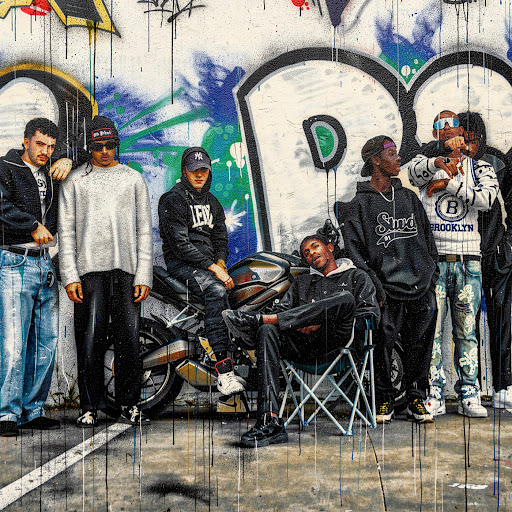
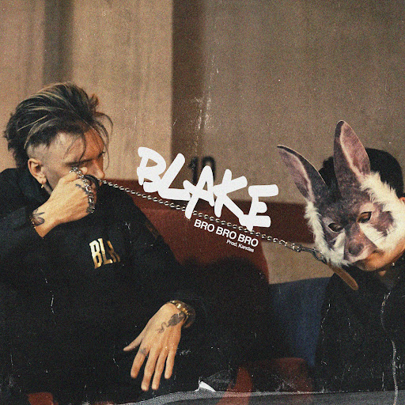

Ultimos Estrenos
Puzzle
2026Es una canción de crítica y reivindicación en la que Blake expresa su descontento con la sociedad y la industria musical. Habla de la falsedad, las apariencias y la pérdida de autenticidad, defendiendo sus principios y su forma de entender el rap.
La Profecía
2026Un tema cargado de rabia, reflexión y desencanto. Blake habla de las decepciones personales, de una sociedad que parece avanzar en la dirección equivocada y de cómo muchas veces ignoramos los problemas hasta que ya es demasiado tarde.

Genius
2026Una canción de reivindicación personal en la que Blake muestra su carácter inconformista y su frustración con la industria musical. Habla de las traiciones, la fama pasajera, las dificultades personales y la importancia de mantenerse fiel a uno mismo, sin dejar de luchar por lo que uno es.

Bro Bro Bro
2026Es un tema sarcástico y provocador en el que Blake se burla de quienes viven aparentando ser alguien que no son. Critica el postureo, la falsedad de las redes sociales, la superficialidad y la obsesión por encajar en las modas. Con mucho humor e ironía, defiende la autenticidad, la humildad y la importancia de ser uno mismo.